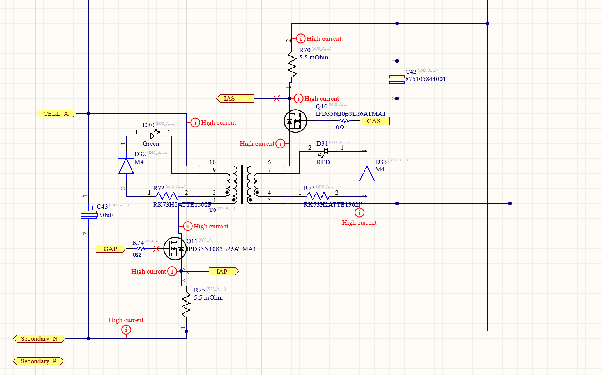

Active Accumulator Management System
As a member of the University of Waterloo Formula Electric Design team I was tasked with designing an active cell balancing board for our accumulator. At the time I joined the team our existing AMS board was responsible for monitoring the temperature of the cylindrical LiPo cells within the accumulator as well as the voltages of all parallel cell groups. The existing board employed passive cell balancing which discharged a cell that was charging at a rate faster than the surrounding cells through a MOSFET and high-power resistor. The existing design was based on the LTC6804 chip.
The existing board was only used during the charging phase to balance cells; while the cells were discharging there was no way to redistribute charge throughout the cells if one cell was discharging faster than the others.
The active accumulator management board I designed used a synchronous flyback transformer topology to transfer charge between individual groups of parallel cells and the rest of the battery stack. The LTC3300 chip was used for this design as it supported ISO SPI communication that was already implemented with the previous boards. The board was designed in Altium Designer.
The new AMS boards were required to fit inside the accumulator box; however, the team did not want to rebuild the accumulator to accommodate a larger AMS board, therefore the active AMS board was required to have the same board space as the passive balancing board. This required a clever high-density component layout.
This project was cancelled 70% of the way through the design phase when the Formula Electric electrical team lead realised the internal resistances of the LiPo cell composing our accumulator were sufficiently similar that active cell balancing was not worth the development time and cost.